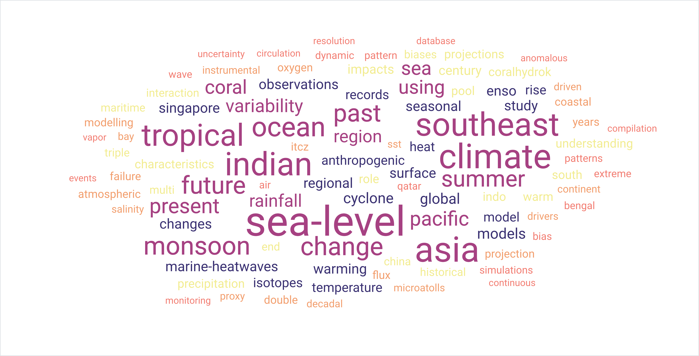
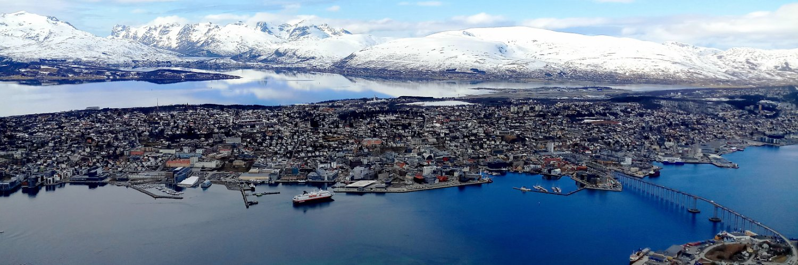

About Me
Hello! I am a climate scientist at Nanyang Technological University (NTU), Singapore.
With over a decade of international research experience across six countries and multicultural environments,
my expertise spans ocean and climate dynamics, climate modeling, sea-level change, monsoons, extreme events,
climate change impacts, and the use of big data in climate research.
As a Senior Research Fellow at the Earth Observatory of Singapore, NTU, I address pressing climate challenges through both research and teaching. My work advances sustainability across diverse projects and reflects leadership in international scientific collaboration, observational field campaigns, and public engagement through education and outreach.
I am also actively involved in global scientific programs such as the CLIVAR Pacific Region Panel, UN Ocean Decade Vision 2030, WCRP Global South Inclusion Task Team, and Joint Task Team on Responsible Data Use. Through these collaborations, I aim to connect cutting-edge science with real-world solutions for resilience.



Contact
Email: dhruba@ntu.edu.sg
Earth Observatory of Singapore
Nanyang Technological University
N2-01A, 50 Nanyang Avenue
Singapore 639798 
© 2025 Dhrubajyoti Samanta. All rights reserved.